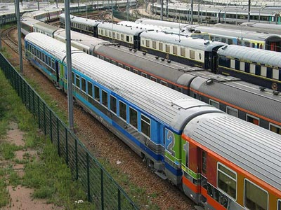

Voitures Voyageurs
Long fut le cheminement pour passer des premiers chariots à peine adaptés au transport d'êtres humains aux voitures à bogies de 26,400m Européennes d'aujourd'hui. Les voitures ont vécu de nombreuses sophistications au cours des deux derniers siècles pour acquérir sans cesse un plus grand confort à des vitesses toujours supérieures.
Dans la seconde moitié du XXe siècle, elles semblent avoir atteint leur apogée en Europe en proposant une construction métallique robuste, une suspension à deux étages, la climatisation et une insonorisation remarquable compte tenu des vitesses qu'elles pratiquent au quotidien (160 voire 200 km/h).
Mais, en France, l'avenir des rames tractées est scellé. Elles seront remplacées par des automotrices, TGV en tête, de plus en plus omnipotentes.
Les DEV
DEV AO
DEV USI
DEV UIC-Y
Les Corail
VSE Eurofima
VTU
Les TER Corail
Premières régionalisations : Alsace - Rhône-Alpes - Interloire
Standardisation TER
Livrées TER spécifiques
Les Corail Express
Corail Aqualys
Corail Téoz
Corail Carmillon
Les voitures régionales et omnibus
RRR

Villeneuve Prairie. L'une des grandes gérance voitures voyageurs SNCF